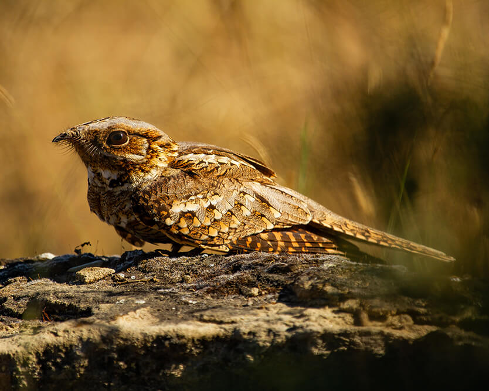

Bağırtlak kuşu (Pterocles orientalis), bozkır ve yarı çöl ekosistemlerinde yaşayan, kahverengi benekli tüyleriyle mükemmel kamuflaj sağlayan özgün bir türdür. Ortalama 30–35 cm uzunluğa sahip olan bağırtlak, güçlü kanatları sayesinde hızlı uçuşlar yapar ve çoğunlukla tohumlarla beslenir. Göçmen yapısıyla Anadolu’da yaz aylarında görülür, kışın ise Afrika ve Orta Doğu’ya göç eder. Sürü hâlinde yaşayan bu kuş, kendine özgü “durrrll” benzeri ötüşüyle tanınır ve su içerken gagasıyla suyu emerek içmesiyle diğer kuşlardan ayrılır. Doğru koşullar altında 10–15 yıl yaşayabilen bağırtlak, hem ekolojik çeşitliliğe katkısı hem de kültürel sembolik değeriyle kuş dünyasında özel bir yere sahiptir.